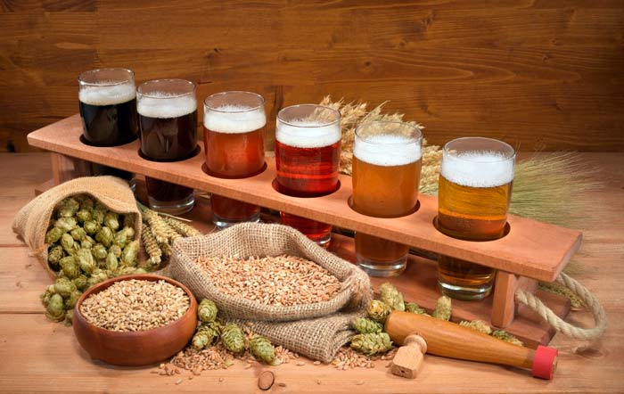

Пивные атрибуты : Кружки, стаканы и подставки .

Параллельно с историей пива существовали и развивались атрибуты этого пенного напитка. Так, слово stein, которым в каталогах именуют почти все разновидности пивных кружек, происходит от немецкого, означающего «пивной бокал, кувшин». Но существует одна тонкость, отличающая stein от классической и традиционной для почитателей пива кружки: ее обязательным элементом является крышка. За этим, на первый взгляд несущественным фактом кроется множество интриг и занимательных исторических ситуаций.
Известно, что в ходе истории в Европе несколько раз бушевала эпидемия чумы, уносившая жизни миллионов человек. Одна из таких пришлась на период с 1340 по 1380 г. Но на этом несчастья жителей Старого Света не заканчивались. В конце XV столетия громадное количество мух наводнили материк, распространяя дизентерию и ряд других, не менее опасных инфекций. В связи с этими событиями органы городского управления городов Германии опубликовали указы, призывающие жителей соблюдать правила личной гигиены, среди которых было рекомендовано пользоваться крышками как для пивных кружек, так и для другой посуды. Вполне вероятно, что первые stein возникли именно в этот исторический период. Со временем кружки из дерева либо ноздреватой глины, поглощающие в себя жидкость и затем источающие неприятный запах, были заменены. Толчком к этому послужил то факт, что стали строить печи для обжига, из которых выходила негубчатая глина, отвечающая санитарным требованиям. Изделия из нее были очень крепкие, но при этом легкие. Благодаря ее «воздушной» структуре рисунок ложился на поверхность более качественно и выглядел более естественно. В те времена уже умели готовить синюю, багровую, темно-коричневую и золотистую глазурь. Медленно, но верно изготовление кружек stein перешло границы Германии. Бутыли и кружки для пива начали делать для других европейских государств.
К концу XVII столетия в Европе развился так называемый региональный стиль, позволявший установить местность, где было изготовлено то или иное изделие. Так, в Скандинавии традиционно стали делать stein из дерева, в том числе и крышки на деревянных скобах. Какое-то время основным отличительным признаком была форма пивных кружек. Например, в Австрии и Богемии они имели широкие и достаточно громоздкие очертания, а в Англии и северных районах Германии они были более изящными.
Несмотря на то что с течением времени отпала необходимость в крышках для пивных кружек, гильдия оловянщиков, тем не менее, делала все возможное, чтобы регламентирующий их использование закон не прекращал своего действия. Таким образом, когда в XIX столетии крышки все же вышли из моды и были вовсе упразднены, они уже успели стать традицией.
Разительные перемены в судьбе пивной кружки в XX в. связаны с разрушением пивоварен в мужских монастырях, в которых традиционно варили этот напиток. Вскоре на смену им пришли небольшие цеха, которые необычайно гордились прозрачностью своего пива. Чтобы металлические кружки не скрывали этой «красоты», их владельцы стали заказывать посуду из стекла. Именно так и возникли бокалы с нанесенной на них гравировкой либо эмалью, а традиционные кружки stein стали историей и со временем перешли в разряд предметов для коллекционирования.
В современное время пивные кружки медленно, но верно вытесняются высокими и низкими стаканами для пива из стекла. Для определенного сорта, а в большей степени для каждой марки пива, делаются индивидуальные стаканы. Но почти все они делаются из стекла высокого качества. Номинальным объемом стакана являются значения 0,33 л или / л. Однако существуют стаканы и по 0,25 л.
Так, например, для сортов бельгийского ламбика отлично подойдут высокие, но узкие стаканы, как для шампанского. Что отчасти объяснено дальним родством этих напитков. Для элей используют глубокие бокалы, по внешнему виду напоминающие бутон распускающегося тюльпана. Есть свои правила и при наливании пива в бокалы. К примеру, бармен из Бельгии должен быть высочайшим профессионалом своего дела, поскольку для каждого сорта пива, производимого традиционно в этой стране, имеется особенный бокал или стакан.
У специалистов существует даже особенный термин – «бельгийская культура подачи пива». Кульминацией бельгийской фантазии в сфере посуды для пива можно считать бокалы со сферической нижней частью, которые, которым прилагаются подставки из дерева. В них разливают пиво «Pauwel Kwak» древнейшей фамильной пивоварни «Bosteels». Поскольку в Бельгии развита культура употребления пива, то и наливается в кружки оно тоже по-особенному. Чтобы клиент мог оценить внешний вид того или иного сорта этого напитка, необходимо продемонстрировать его пышную и крепкую пенную шапку, поскольку это является показателем совершенного качества. Ее нельзя получить обыкновенным наклоном стакана и постепенным наливанием жидкости. Когда бокал наполнен на /, необходимо пиво наливать тонкой струйкой. Далее заполнить стакан до тех пор, пока пена не перельется через его края шапкой, при этом следует оставить небольшое количество пива в бутылке. Затем длинным ножом с ровным лезвием отсечь возвышающуюся над бокалом пену, чтобы она стала ровной. Поверх нее следует тонкой струйкой вылить пиво, оставшееся на дне бутылки. Это снова поднимет пену, однако теперь она будет правильной формы.
Очень необычным и не столь популярным является ячменное пиво, которое отличается высокой степенью крепости. Дело в том, что спирта в нем 8–12 % об., как у вина, а плотность сусла составляет 21–29 %, что больше, нежели у нежного эля. Ячменное пиво обладает запахом фруктов и карамели, а также богатым солодовым привкусом, при этом натуральный сладкий вкус достаточно гармонично сочетается с горечью хмеля. Классический его цвет – темный медно-золотистый. Ячменное пиво разливают по бутылкам нестандартной формы, а подают зачастую в бокалах для вина либо для бренди. Такой напиток хорошо хранится и со временем приобретает лучшие свойства.
Традиционное пиво готовят из ячменного солода. Но в некоторых европейских странах, в том числе и в России, варят пшеничное (wheat beer). Оно представляет собой напиток, в котором практически до 40 % ячменя заменено пшеницей. Это в основном не очищенное светлое пиво с ненавязчивой кислинкой во вкусе и характерным ароматом. Его лучше всего употреблять в летний период, так как оно прекрасно утоляет жажду и освежает. Подают его в высоких стеклянных стаканах с узким верхом.
Для английских стаутов предназначены различные стаканы, отличающиеся между собой не только внешним видом, но и объемом. Такие емкости могут вместить в себя до 6 л. Стаут пьют как из прямых расширяющихся кверху стаканов, так и из специальных округленной формы, удобной для держания.
А вот лагеры, имеющие незначительное количество спирта, следует пить из удлиненных бокалов тонкого стекла. Каких-то строгих ограничений по выбору посуды для этого вида пива не существует.
Совершенно естественно, что право выбора из чего пить любимый напиток принадлежит только вам. Но если вы считаете себя истинным любителем пива, необходимо иметь стаканы нескольких видов для него. Это позволит в полной мере ощутить вкус пенного напитка разных сортов.
Теперь рассмотрим другой предмет пивной атрибутики – подставки под стаканы с этим напитком. Они называются «бирдекель» (в переводе с немецкого означает «пивная крышка») и предназначены для защиты покрытия стола от нечаянно вылившейся пены или самого пива, а также конденсата на кружке или стакане.
История их появления связана с уже описанными нами кружками с крышкой.
Поскольку их традиционно изготавливали из олова или серебра, то пользоваться ими могли себе позволить лишь обеспеченные граждане. Другой категории посетителей пивных заведений подавали кружки без крышек. Чтобы в них не падали листья или насекомые, к ним прилагались коврики из фетра. А поскольку они были не очень удобны из-за жесткости материала, то их клали не на кружку, а под нее. Бирдекели были многоразового использования, пока в 1893 г. Р. Шпут не запатентовал технологию изготовления одноразовой подставки из формованного волокна (бумажной массы). Диаметр их составлял 107 мм (соответствовал диаметру традиционной немецкой кружки и, кстати, сохранился до наших дней), а толщина 5 мм. Эти бирдекели довольно быстро завоевали популярность, сменив фетровые.
В наше время бирдекели, помимо защитной функции, выполняют еще и другие. Их используют в рекламных целях пивоваренные компании, а посетители баров используют их в качестве развлечения. Так, существует игра frisbee, по правилам которой необходимо по очереди выставить стопку бирдекелей на край стола так, чтобы она чуть выступала, и затем ударить по ней рукой снизу. Цель – поймать в воздухе все подставки той же рукой, стараясь не ронять их. Выигрывает тот, кто поймал больше всех.